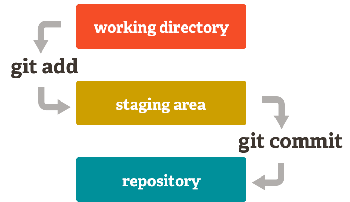

分支切换、合并代价小
小而快，大部分操作都是本地操作
分布式，每个人都有一份克隆，离线提交、在线同步
流行，github、google code、sourceforge，大用户群
可伸缩性，Linux kernel、Android
Git 的大部分操作都比 SVN 快得多 (http://git-scm.com/about/small-and-fast)
Git 的服务端仓库要比 SVN 小得多 (Mozilla 项目, 12G/420M ~= 1/30)
分支代价小，分支也包含整个历史 (svn 分支是一份拷贝，git 分支是一棵分叉的树)
合并容易，不需要记住分支版本号和复杂的操作
Git 仓库基本不会损坏，备份简单 (git clone 就是一次备份，有几个开发人员/用户就有几份备份，不担心代码丢失)
Snapshot vs. Delta
$ git svn clone http://svn.apache.org/repos/asf/subversion/trunk subversion-git/
$ svn co http://svn.apache.org/repos/asf/subversion/trunk subversion-svn/
$ du -sh subversion-git/ subversion-svn/
137M subversion-git
105M subversion-svn
subversion 项目有 37024 次提交，subversion-git 含有所有历史
$ cd subversion-git && git log --pretty=oneline | wc -l
37024
@debian/ubuntu: $ apt-get install git
@fedora/centos: $ yum install git
@windows -> msysgit(http://msysgit.github.com)
使用 1.6 版本以上的 git
msysgit line ending conversion: checkout as-is, commit as-is (core.autocrlf)
Chromium Project: The primary reason not to use TortoiseGit is speed. ... TortoiseGit is too wasteful in polling status and the UI is too often unresponsive in a workable manner.
推荐使用方式：用 GUI 看查看变动，用命令行作其他操作
Git 自带一些 GUI 工具：gitk、git gui blame、git mergetool、git difftool
$ vi ~/.bashrc
PS1='\[\033[01;31m\]$(__git_ps1 "(%s)")\[\033[00m\]'$PS1 # msysgit 不需要
GIT_PS1_SHOWDIRTYSTATE="true"
GIT_PS1_SHOWSTASHSTATE="true"
GIT_PS1_SHOWUNTRACKEDFILES="true"
GIT_PS1_SHOWUPSTREAM="auto"
(master *%=)azuwis@debian:~/src/mdpress$
配置 Git 用户名和邮件地址，标识提交者的身份，在 github、gerrit 里面都会用到
$ git config [--global] user.name "用户名"
$ git config [--global] user.email "邮件地址"
系统配置 /etc/gitconfig，用户配置 ~/.gitconfig，仓库配置 .git/config
$ git config --global -e # 修改 ~/.gitconfig
[user]
email = 邮件地址
name = 用户名
[alias]
co = checkout
st = status
di = diff
ci = commit
br = branch
mt = mergetool
sta = stash
lg = log --graph --pretty=format:'%Cred%h%Creset%C(yellow)%d%Creset %s %Cgreen(%cr)%Creset%Cblue(%an)%Creset' --abbrev-commit --date=relative
# 以下 msysgit 不需要
[color]
ui = auto
[core]
pager = less
$ git help tutorial
$ git help tutorial-2
$ git help
$ git help 子命令
带-的为不常用/内部命令
git status 命令的输出有非常有用的提示
新建仓库
$ git init 目录名
克隆仓库
$ git clone ssh://git@github.com/foo/bar.git
$ git clone git://github.com/foo/bar.git
$ git clone https://github.com/foo/bar.git
$ git clone /path/to/repo
修改文件
$ vi 文件名
查看工作目录状态和修改内容
$ git status
$ git diff
把修改的内容放到暂存区
$ git add [文件名|目录名]
查看暂存区的 diff
$ git diff --cached
将暂存区的内容(并非所有的本地修改)提交到本地仓库
$ git commit [-v]

查看所有分支和当前所在的分支
$ git branch
以当前的 HEAD 为分支点，新建分支
$ git branch 分支名
切换分支
$ git checkout 分支名
branch + checkout
$ git checkout -b 分支名
合并另外一个分支的所有改动
$ git merge 另一分支名
git help revisions
查看提交日志
$ git log [-p] [--all]
$ gitk [--all]
查看变动
$ git diff
$ git diff v0.1
$ git diff v0.1..v0.2
$ git diff master..devel
$ git difftool ...
查看文件每行的最后变动
$ git blame [master|v0.1|...] -- path/to/file
$ git gui blame [master|v0.1|...] -- path/to/file
生成/使用已有 ssh 公私钥对
$ ssh-keygen
打开 gerrit/github 设置页面，配置 ssh 公钥(~/.ssh/id_rsa.pub)
对于新建的仓库
$ git remote add origin ssh://git@github.com/foo/bar.git
$ git push [-u] origin master
对于克隆的仓库
$ git push # 相当于 git push origin master
$ git fetch origin
$ git merge origin/master
pull ~= fetch + merge
pull --rebase ~= fetch + rebase
谨慎用 git pull
A---B---C topic
/
D---E---F---G master
@master $ git merge topic
A---B---C topic
/ \
D---E---F---G---H master
@topic $ git rebase master
A'--B'--C' topic
/
D---E---F---G master
@master $ git merge topic
A'--B'--C' (master, topic)
/
D---E---F---G
如果分支已经推送到服务端，并且已经被很多人同步，那不建议 rebase 这个分支
有冲突的情况下最好用 merge
本地提交量少的时候可以考虑用 rebase
应用某一个/一些提交产生的变动
A---B---C topic
/
D---E---F---G master
@master $ git cherry-pick B
A---B---C topic
/
D---E---F---G---B' master
$ git clone ssh://git@github.com:foo/bar.git
A---B---C (origin/topic)
/
D---E---F---G (master, origin/master)
@master $ vi file; git commit file
A---B---C (origin/topic)
/
D---E---F---G (origin/master)
\
H (master)
$ git fetch origin
A---B---C (origin/topic)
/
D---E---F---G---I (origin/master)
\
H (master)
$ git clone ssh://git@github.com:foo/bar.git
$ vi file; git commit file
$ git remote add fork1 ssh://git@github.com/fork1/bar.git
$ git fetch fork1
A---B---C (origin/topic, fork1/topic)
/
D---E---F---G---I (origin/master)
\ \
\ H (master)
\
J---K (fork1/master)
git revert rev: 生成跟某一 commit 相反的改动
svn revert path/to/file: 撤销文件改动
git checkout path/to/file: svn revert 的对应命令
整个历史全文检索
$ git log -S'pattern'
#HEAD 不能编译，v1.2 能编译
$ git bisect start HEAD v1.2 --
$ git bisect run make
$ git bisect visualize
# ... hack hack hack ...
$ git stash
$ edit emergency fix
$ git commit -a -m "Fix in a hurry"
$ git stash pop
# ... continue hacking ...
Windows 下可用 p4merge k3diff gvimdiff(gvim for windows) 等
Linux: opendiff kdiff3 tkdiff xxdiff meld kompare gvimdiff diffuse ecmerge p4merge araxis bc3 emerge vimdiff